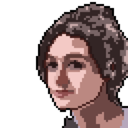
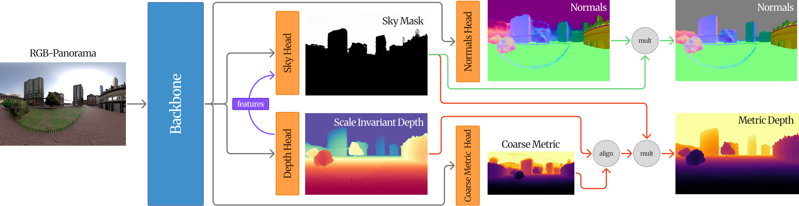

📟 PaGeR
Panoramic Geometry Reconstruction
Unified Panoramic Geometry Estimation via Multi-View Foundation Models

Isidora Slavkovic² Dominik Narnhofer¹ Nando Metzger⁴ Denis Rozumny³ Konrad Schindler¹ Nikolai Kalischek²Abstract
Geometry estimation from perspective images has greatly advanced, maturing to the point where off-the-shelf foundation models are able to reconstruct 3D scene structure not only from multi-view imagery, but even from a single view. A natural extension is 3D reconstruction from panoramas, with the exciting prospect of recovering a full 360-degree scene from a single panoramic image. In this work, we introduce PaGeR (Panoramic Geometry Reconstruction), a framework to lift powerful 3D foundation models designed for perspective imagery to the panorama domain. Our strategy is to start from a pre-trained transformer for 3D reconstruction and turn it into a unified high-performance model that predicts scale-invariant depth, metric depth, surface normals, and sky masks from both perspective and omnidirectional images, in a single forward pass. By keeping architectural changes to a minimum and mixing perspective and panoramic images during training, PaGeR retains the rich 3D prior of the underlying foundation model while learning to also estimate geometrically consistent 360-degree scenes from single panoramas. We extensively test our method in both indoor and outdoor environments and find that it delivers state-of-the-art performance and excellent zero-shot performance across a wide range of scenes.
Method

Cubemap Projection
The equirectangular panorama is projected into a fixed 6 × 504 × 504 cubemap, avoiding polar distortion and decoupling runtime and memory from the input resolution.
Multi-View Foundation Backbone
Rather than a panorama-specific network, PaGeR lifts a perspective 3D foundation model (Depth Anything 3, ViT-Giant) to 360° by treating the six cube faces as a multi-view set, reusing its strong geometry priors.
Multi-Task Heads
A single forward pass drives four heads — scale-invariant depth, surface normals, sky, and coarse-metric. The coarse-metric head rescales the scale-invariant depth into metric depth in metres, alongside the surface normals and sky mask.
Datasets
To train and benchmark panoramic geometry, we release two complementary datasets.
PanoInfinigen
A large-scale synthetic dataset for high-resolution, general-purpose panoramic geometry. We extend the procedural Infinigen pipeline to 360° equirectangular rendering, producing 70,000 panoramas from 20,000 distinct indoor scenes — from kitchens and bedrooms to natural landscapes — and add ~7,000 outdoor urban panoramas via the iCity city generator. Every sample is rendered at native 4K with complete, pixel-perfect ground-truth metric depth and surface normals.
ZüriPano
A real-world outdoor benchmark of 100 panoramic scans across 11 urban locations in Zürich, captured with a Leica RTC360 LiDAR scanner at 8K resolution with an effective range of 130 m. Each panorama comes with a dense, high-accuracy depth map and a validity mask, providing challenging large-scale outdoor geometry that complements the synthetic training data.
Quantitative Results
From a single panorama and one forward pass, PaGeR sets a new state of the art across scale-invariant depth, metric depth, and surface normals. Best per column in bold.
Scale-Invariant Depth
Depth up to a single global scale (least-squares aligned), on two indoor benchmarks and the outdoor ZüriPano. PaGeR leads every metric, and the gap is largest on real outdoor scenes — where perspective foundation models such as DA² and UniK3D break down.
| Method | Matterport3D360 | Stanford2D3DS | ZüriPano | ||||||
|---|---|---|---|---|---|---|---|---|---|
| AbsRel↓ | RMSE↓ | δ₁↑ | AbsRel↓ | RMSE↓ | δ₁↑ | AbsRel↓ | RMSE↓ | δ₁↑ | |
| DreamCube* | 30.45 | 108.81 | 54.26 | 28.45 | 75.30 | 56.39 | 29.57 | 484.91 | 53.07 |
| DepthAnyCamera | 25.62 | 94.06 | 68.11 | 18.35 | 53.73 | 76.23 | 21.98 | 487.66 | 65.41 |
| MoGe | 18.12 | 81.68 | 77.11 | 15.34 | 49.88 | 82.52 | 19.25 | 484.18 | 77.12 |
| EGformer* | 16.74 | 96.15 | 79.32 | 13.64 | 58.95 | 84.64 | 55.49 | 721.83 | 31.21 |
| DAP | 15.84 | 85.18 | 82.44 | 9.76 | 46.69 | 92.37 | 19.86 | 583.42 | 72.09 |
| RPG360 | 15.40 | 79.40 | 82.40 | 11.91 | 46.60 | 87.73 | 18.27 | 455.28 | 78.41 |
| UniK3D† | 14.82 | 69.27 | 83.67 | 9.93 | 40.69 | 93.34 | 31.00 | 832.13 | 38.78 |
| PanDA* | 13.84 | 82.82 | 84.26 | 10.69 | 55.72 | 90.73 | 24.64 | 515.48 | 58.31 |
| DA² | 11.06 | 67.72 | 89.18 | 7.64 | 37.29 | 95.63 | 61.22 | 869.08 | 2.17 |
| PaGeR (Ours) | 9.67 | 64.69 | 90.87 | 5.93 | 35.34 | 96.10 | 9.36 | 299.61 | 94.75 |
Metric Depth
Absolute depth in metres — a far harder setting. PaGeR is best on eight of nine metrics across the three benchmarks.
| Method | Matterport3D360 | Stanford2D3DS | ZüriPano | ||||||
|---|---|---|---|---|---|---|---|---|---|
| AbsRel↓ | RMSE↓ | δ₁↑ | AbsRel↓ | RMSE↓ | δ₁↑ | AbsRel↓ | RMSE↓ | δ₁↑ | |
| UniK3D† | 33.43 | 143.24 | 46.48 | 24.37 | 64.71 | 64.50 | 35.81 | 1345.48 | 34.86 |
| RPG360 | 29.26 | 136.99 | 35.33 | 29.35 | 90.73 | 17.36 | 40.36 | 772.16 | 2.14 |
| DepthAnyCamera | 25.16 | 132.66 | 62.25 | 17.15 | 59.29 | 77.98 | 33.23 | 716.38 | 37.83 |
| DAP‡ | 30.16 | 168.88 | 80.19 | 10.97 | 53.39 | 90.64 | 47.00 | 839.72 | 24.02 |
| PaGeR‡ (Ours) | 21.83 | 123.48 | 69.50 | 10.94 | 45.43 | 90.94 | 31.97 | 530.85 | 39.30 |
Surface Normals
Evaluated on Structured3D against specialist normal estimators trained in-domain. Despite being a single unified model, PaGeR is best on every metric.
| Method | Mean↓ | MSE↓ | δ<5°↑ | δ<22.5°↑ |
|---|---|---|---|---|
| UniFuse | 8.25 | 453.1 | 76.24 | 87.55 |
| PanoFormer | 16.92 | 1053.5 | 59.13 | 75.50 |
| OmniFusion | 20.70 | 832.0 | 28.51 | 63.55 |
| MonoViT | 5.92 | 277.8 | 78.93 | 90.58 |
| HyperSphere | 5.79 | 253.4 | 78.38 | 90.73 |
| MTL | 8.98 | 469.0 | 72.51 | 86.02 |
| PanoNormal | 5.56 | 246.6 | 79.18 | 91.01 |
| PaGeR (Ours) | 5.49 | 174.9 | 79.91 | 92.83 |
Qualitative Results
Depth Comparison
Drag the slider to compare. We compare PaGeR against the strongest scale-invariant competitor (DA²) and the strongest metric-depth competitor (DAP).
Scenes — scroll for more →
Competitor
Normal Comparison
Drag the slider to compare PaGeR's surface normals against the strongest panoramic specialist (MTL), or against the input RGB panorama. Normal direction is encoded as RGB color.
Scenes
Competitor
3D Point Cloud Comparison
PaGeR on the left, competitor on the right — cameras stay in sync. We compare PaGeR against the strongest scale-invariant competitor (DA²) and the strongest metric-depth competitor (DAP).
What to look for: global layout — PaGeR reconstructs a coherent scene with flat, parallel walls, where competitors warp and tilt the same surfaces; local detail — PaGeR preserves the fine geometry of edges and clutter, while competitors squash, oversmooth, and flatten it.
Scenes — scroll for more →
Competitor
Input RGB Panorama
Citation
@article{bozic2026pager,
title={Unified Panoramic Geometry Estimation via Multi-View Foundation Models},
author={Bozic, Vukasin and Slavkovic, Isidora and Narnhofer, Dominik and Metzger, Nando and Rozumny, Denis and Schindler, Konrad and Kalischek, Nikolai},
journal={arXiv preprint arXiv:2605.26368},
year={2026}
}